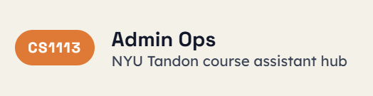
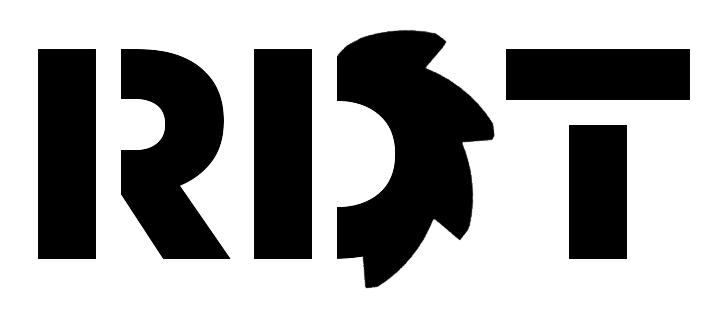

Computer Science Course Assistant
September 2025 - Present
I currently work as a CS course assistant for CS 1113. As a course assistant, I teach weekly lab sections, host office hours, and conduct homework and quiz gradings for students.
Flexible AI-enabled Mechatronics Systems Lab (FAMS)
September 2025 - January 2026
Part of the computer vision subteam for FAMS, where I was a researcher. I learned the fundamentals of MONAI, a PyTorch-based framework for training medical imaging data, and how to apply it within the scope of 3D segmentation of medical images, especially for tumor detection.

Robotic Design Team
January 2025 - Present
One of the leads for the Robotic Design Team's (RDT) software competency, whose goal is to participate in NASA's Lunabotics competition. More specifically, I am currently the software systems engineer and I work with the mechanical and electrical systems engineers to plan and design robot requirements and specifications.
America Reads Tutor
October 2024 - January 2025
Worked alongside elementary school teachers in the classroom to help teach fifth grade students subjects such as reading and math.